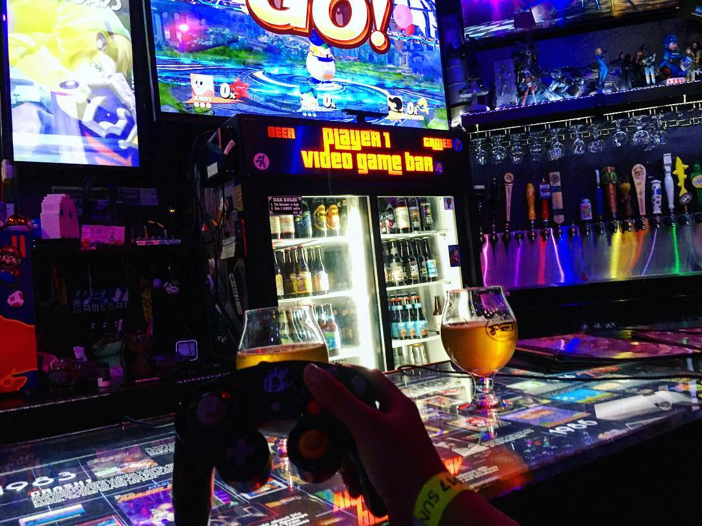

大阪海遊館 (大阪)
淺草寺 (東京)
道頓堀 (大阪)

太空站， 就如它的名稱：店內有著許多舊款電玩遊戲機，例如：任天堂 64 還有任天堂第一代的紅白機。
TripAdvisor 評價：
"這是我們第一次來大阪，發現所有的酒吧都非常有趣好玩。你不必精通每一種電玩遊戲機，因為在這裡你也可以只是喝喝飲料；我完全不懂任何一種遊戲機，而且也不喜歡，但店內的服務人員還是非常努力的試圖為我們找出會玩的機種。但真的很遺憾，我們完全不會玩啊！
不過，這裡的酒保非常友善，而且很熱心；因為適逢猶太教光明節的八天慶典期間，因此他們以貝果製作提供了規定食用的油炸土豆絲餅，而且還在店內做了特別的佈置，配上很棒的飲料，哇！真的是太酷了！若您來到大阪，您一定要來看看這家酒吧。" - 來自美國的 therealmissrita